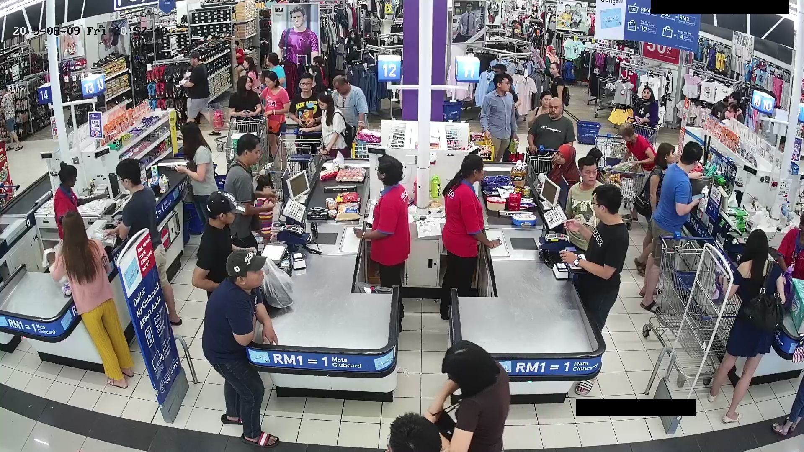
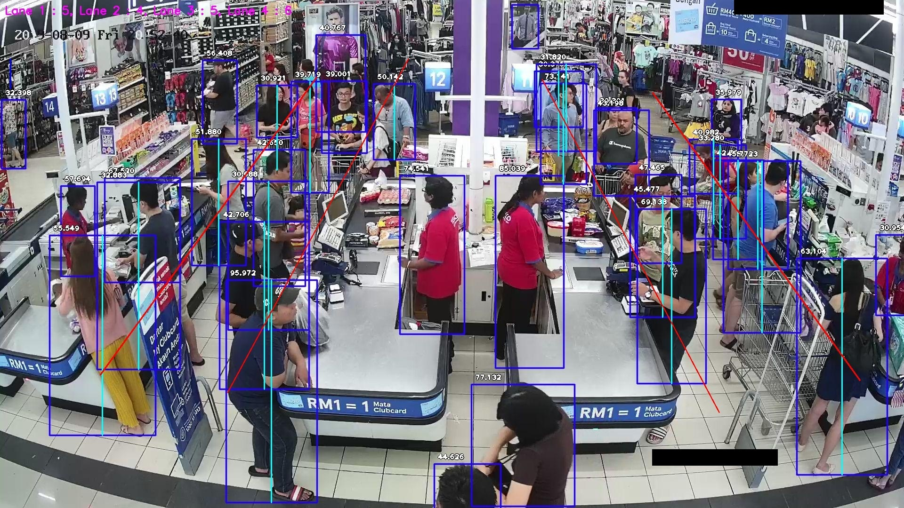

Queue Detection
- Python
- OpenCV
- Image Proccessing
- Machining Learning


Overview
This is a program that able to detect the Queue Length and built using Python Programming. This tool able to measures the load on points of client service. Information about service load is useful in:
- retail
- transportation (bus and railway stations, airports, subway stations)
- banks and companies without e-queuing systems
- entertainment and recreation establishments
By knowing the line length, management can:
- optimize employee work schedules
- redesign floor plans
- increase or decrease the number of points of service
How it Works
The detection tool counts the number of people who are standing in line, based on the image from the video camera aimed at the line area.
- Set an area in the video image in which the detection tool will count the number of standing people.
- Set multiple of line if there is multiple service counter.
- Result will show the number of people who are standing in the particular of the line.
- E.g. Line 1: 5; Line 2: 4; Line 3: 5; Line 4: 6
Addtional Note:
- Using Pretrained model: ResNet-50
- The model is a convolutional neural network that is 50 layers deep